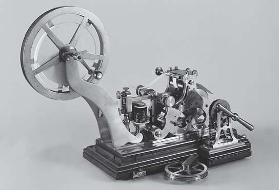
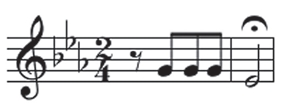
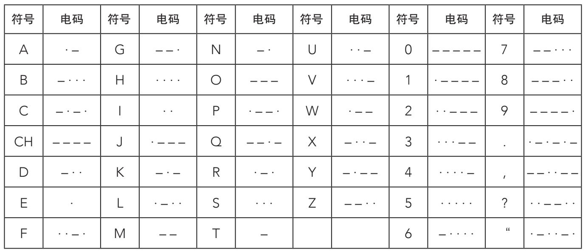
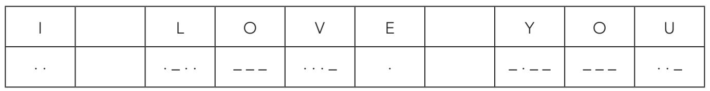

莫尔斯电码用点、线、空格组合表示字母表中的字母、数字和其他符号。这样一来，它就把字母表翻译为能够用光、声音或电的简单符号表达的内容。点表示一个时间单位，大约为1/25秒；线表示三个时间单位（等于三个点）。字母之间的空格也是三个时间单位，单词之间的空格用五个时间单位表示。
非语言的交流
托马斯·爱迪生（1847—1931）因患有听力障碍，就与妻子玛丽·史迪威以莫尔斯电码的方式交流。两人恋爱期间，爱迪生用手轻拍电码向玛丽求婚，玛丽也以同样的方式回应他。后来，电码就成了这对夫妻常用的交流方式，甚至去剧院看戏，爱迪生都会把玛丽的手放到自己的膝盖上，这样她就能把演员的对白“发报”给他了。
最初，莫尔斯没能在美国和欧洲申请到电码的专利权。1843年，他终于获得了政府的财政支持，在华盛顿（特区）和巴尔的摩之间铺设了一条电报线路。1844年，第一条编码传输完成，不久之后一家公司成立了，专门负责整个北美洲的电报线路覆盖。1860年，拿破仑三世授予莫尔斯法国荣誉军团勋章，此时，他的电报线已经纵横交错在美国和欧洲大地上。1872年莫尔斯去世时，美国已经铺设了长达30万千米的电缆。
这台起初由莫尔斯在1844年发明的简单仪器，此时已开始用来发送和接收电报信息。这台设备包括一个电报发报键——用来连接和断开电流，还有一个电磁体——用来接收输入信号。发报员每次按下发报键（通常会用食指或中指），就会产生电接触。按动发报键，间歇性脉冲就通过由两根铜线组成的电缆传送出去。这些线由高高的木制“电线杆”支撑，连接国内不同的电报站，通常能不间断延伸数百千米。

1844年塞缪尔·莫尔斯发明的第一台电报机。
V大调交响曲
说起与电报结缘的聋人，贝多芬也是一位，不过没那么直接。他的天才之作《第五交响曲》最著名、最振奋人心的前四个和弦让人们不禁会联想起一条莫尔斯电码信息“dot dot dot dash”（点点点线）。

在莫尔斯电码中，“dot dot dot dash”对应的字母是V，也就是单词“victory”（胜利）的首字母。为此，“二战”期间，英国广播公司（BBC）将贝多芬的《第五交响曲》作为向欧洲占领区播送的节目的开场曲。
输入信号接收器包括一个由铜线圈缠绕铁芯构成的电磁体。当铜线圈接收到与点线相符的电流时，铁芯磁化，并吸引一块也由铁构成的活动部件。这个部件击打磁体时，会产生与众不同的声音。接收到一个点，就发出短促的“咔嗒”声，如果是一条线，声音就长些。最初，借助这种仪器发送一封电报，需要一位操作员在一边敲打出信息的编码版本，另一个人在一边接收并译解出来。
莫尔斯电码的通用字符的翻译如下表所示：

所以，信息“I love you”（我爱你）编码后就是：

从一定程度上说，莫尔斯电码是后来数字通信系统的前身。为了证明这一点，我们可以把莫尔斯代码转换成数字，1表示点，0表示线。由1和0构成的字符串在后面的章节中会经常出现。
在20世纪，无线电的发明催生了无线通信，取代了传统的电报。不久之前的电报员摇身一变，成了无线电报员。这项新技术意味着信息能够以更快的速度和更大的容量传递。然而，通过电磁波发送的信息比较容易被截获。这不仅给密码破译者提供了大量加密的材料去破解，也有利于巩固他们在与加密者的对抗中的主导地位，鉴于多数密码都是政府和私人机构使用的，因此即便是最敏感的信息，也都基于已知的算法。以普莱费尔密码为例，它是由英国莱昂·普莱费尔（Lyon Playfair）男爵和查尔斯·惠特斯通爵士（Sir CharlesWheatstone）创造的。普莱费尔密码是对波里比阿密码的独创性变式，但最终也只是一种变式——附录中有详细说明。
虽然对这些密码的创造者而言，新密码是相当大的创新，但破译这些循环密码只是时间和计算能力的问题。“一战”中的密码史完美阐释了这一点。在齐默尔曼电报事件中，我们已经了解了德国外交加密中的弱点。还有一个名为“ADFGVX”的常用密码用来加密前线最敏感的信息，本以为这种密码无懈可击，却同样也被敌方破解了。“一战”中，德国在密码方面的双重失败使得各方都意识到，必须提高加密信息的安全性。要想达到这个目的，就要增加密码分析的难度。
拯救我们的灵魂（Soul）、船只（Ship）或任何以“S”开头的事物
莫尔斯电码中最有名的信号当数“SOS”了。由于它简单且易于传递（三点、三线、三点）——没有任何实际意义，所以几个欧洲国家共同确立其为求救信号。但是，人们很快就给这个信号赋予了其他含义。这些“情形缩略语”中最常见的就是“Save Our Souls”（拯救我们的灵魂）。后来，这个信号在海上使用频繁，“SOS”也变成了“Save Our Ship”（拯救我们的船只）。